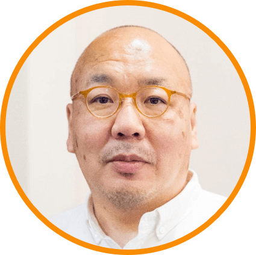
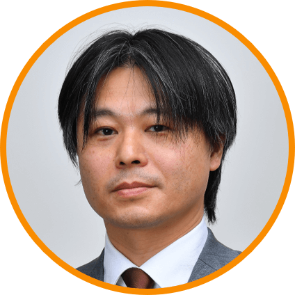
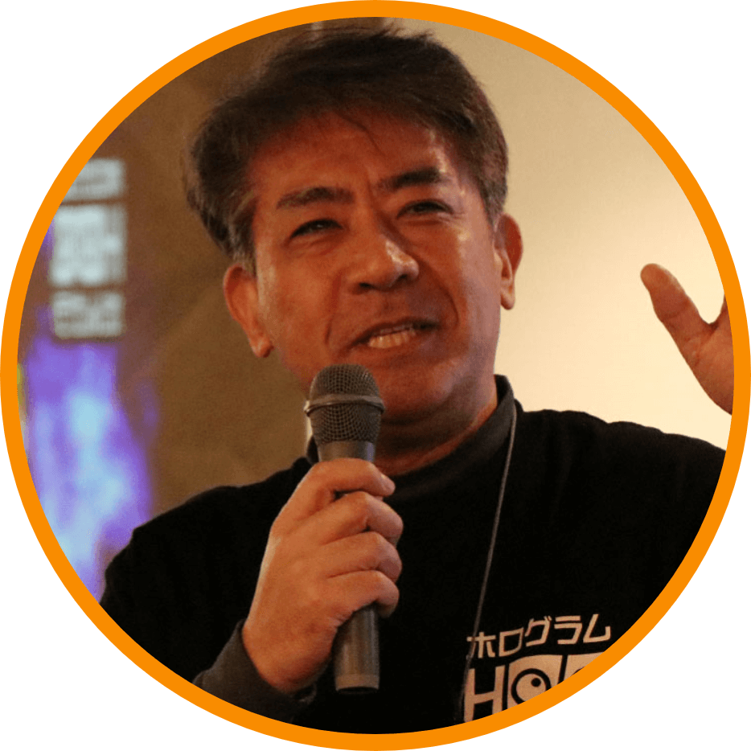
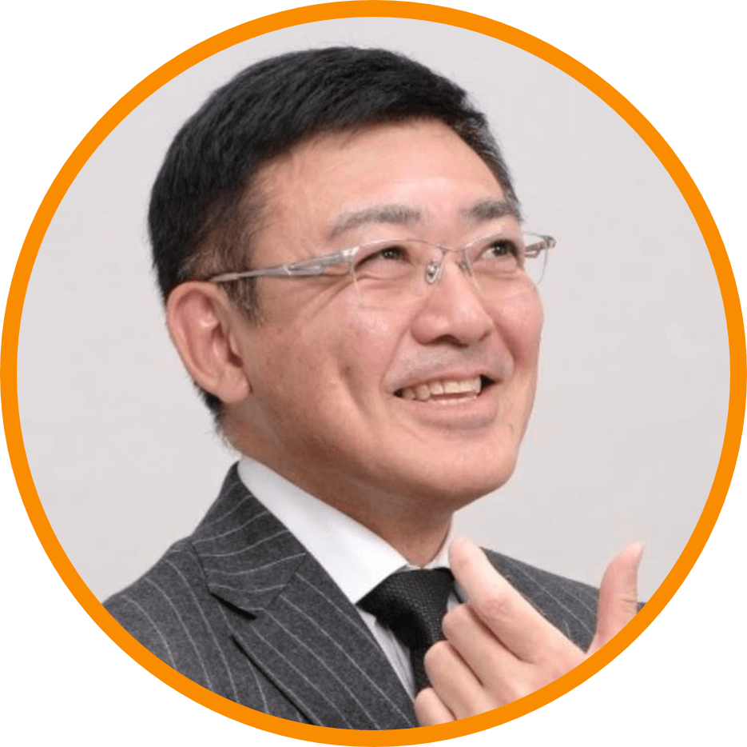
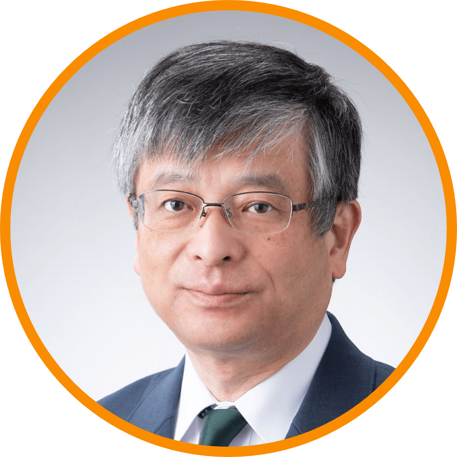
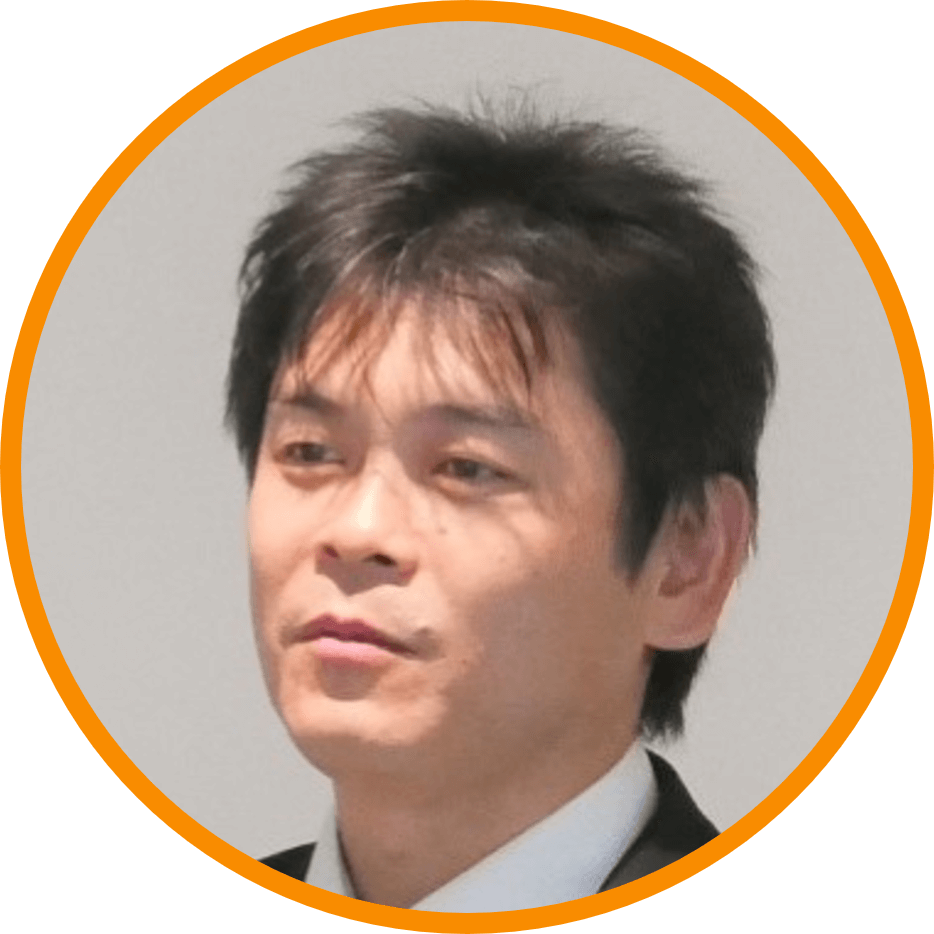
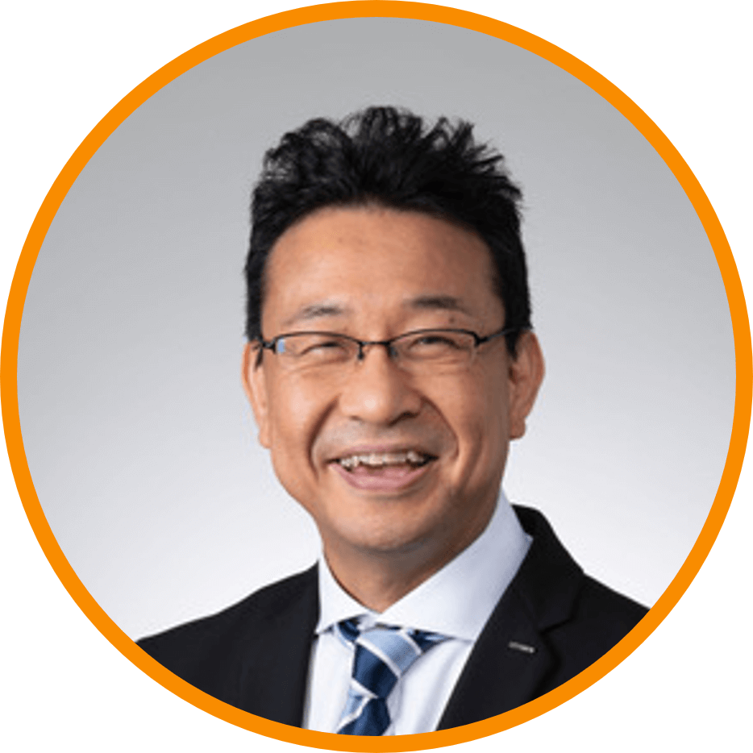
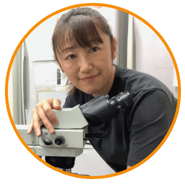

後藤健夫
教育ジャーナリスト

教育ジャーナリスト
東京学芸大学大学院

東京工業大学 教授

ホログラム株式会社 専務取締役
IT企業 エンジニア

CAP高等学院 代表

芸術文化観光専門職大学 講師
株式会社ガイアックス 起業ゼミ責任者

株式会社クレスコ 執行役員
鹿島建設株式会社 開発事業本部 課長
株式会社日本総合研究所 研究員
一般社団法人アンカー 理事
HI合同会社 コミュニティデザイナー

株式会社InnoProviZation 代表取締役社長
Essay inc. CEO I _ for ME Producer

東京都立大学 理学研究科 生命科学専攻 准教授
NTT都市開発株式会社 開発本部 課長
渋谷区議会議員